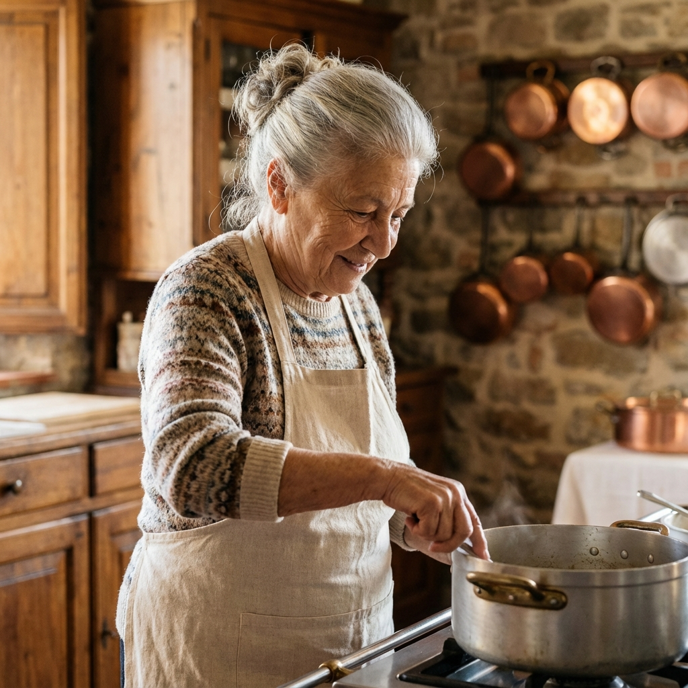
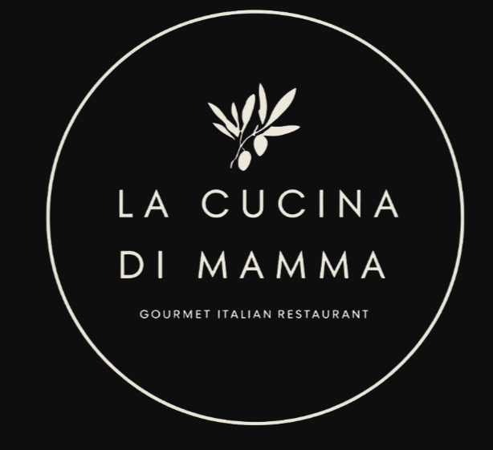
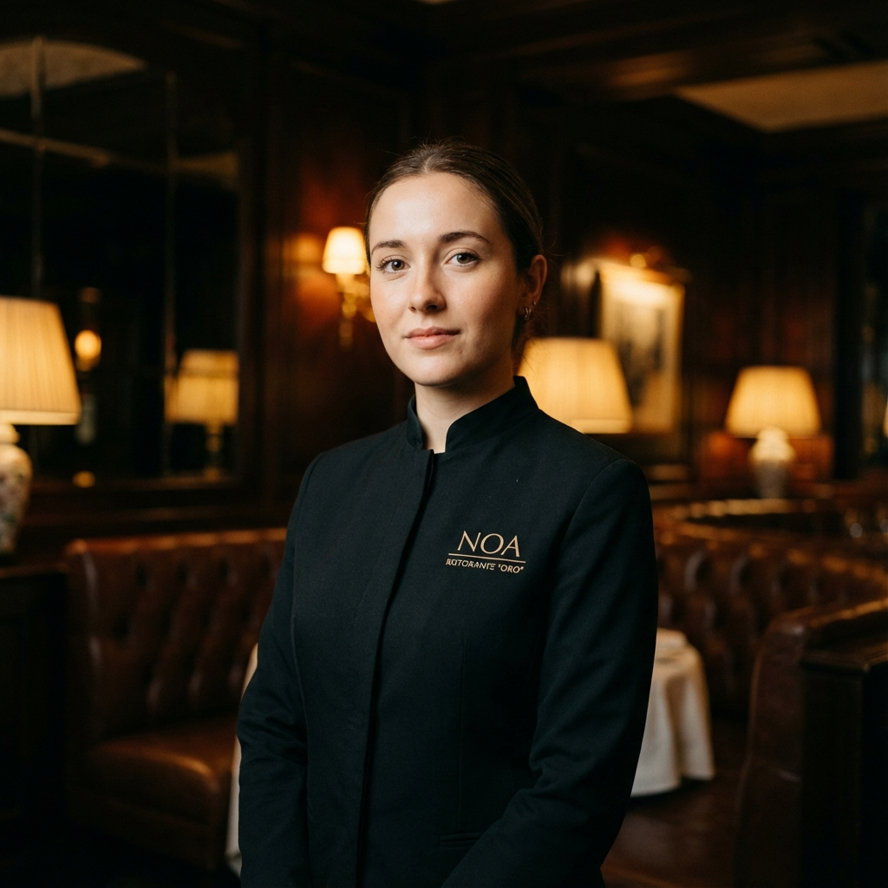
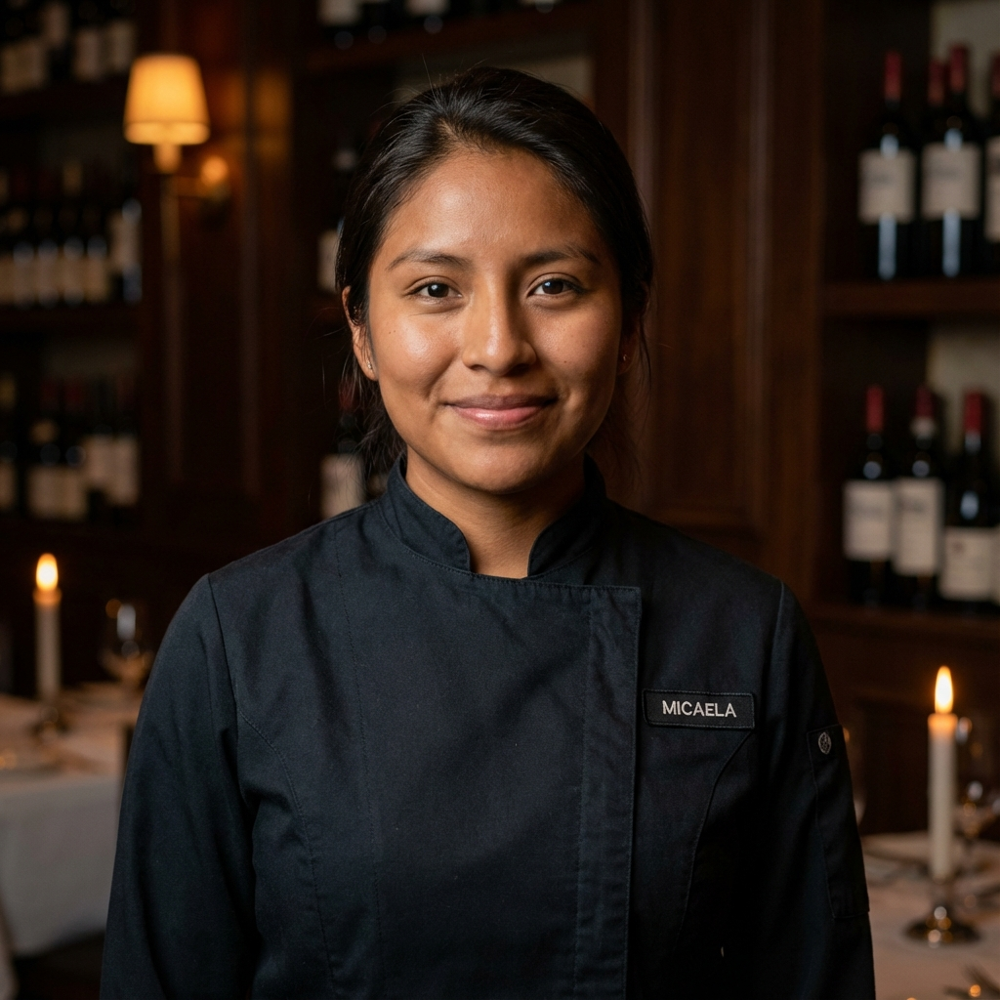
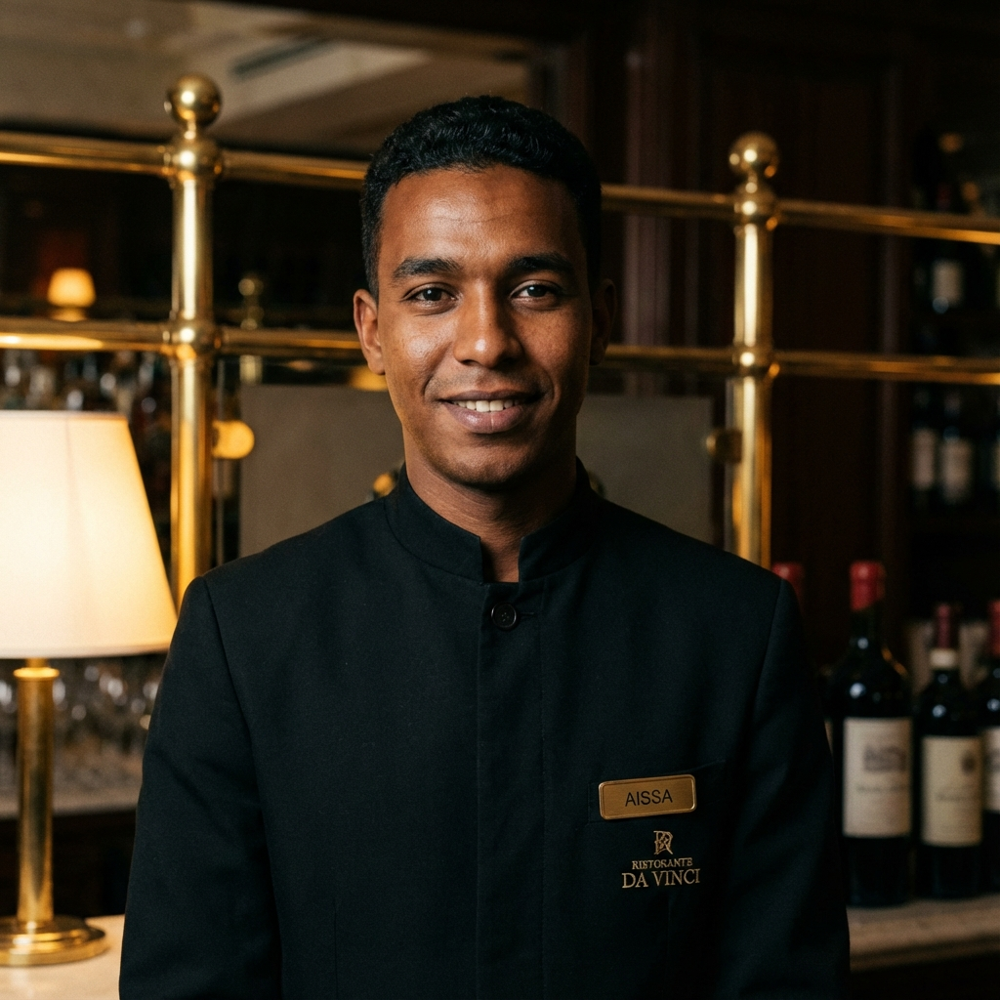
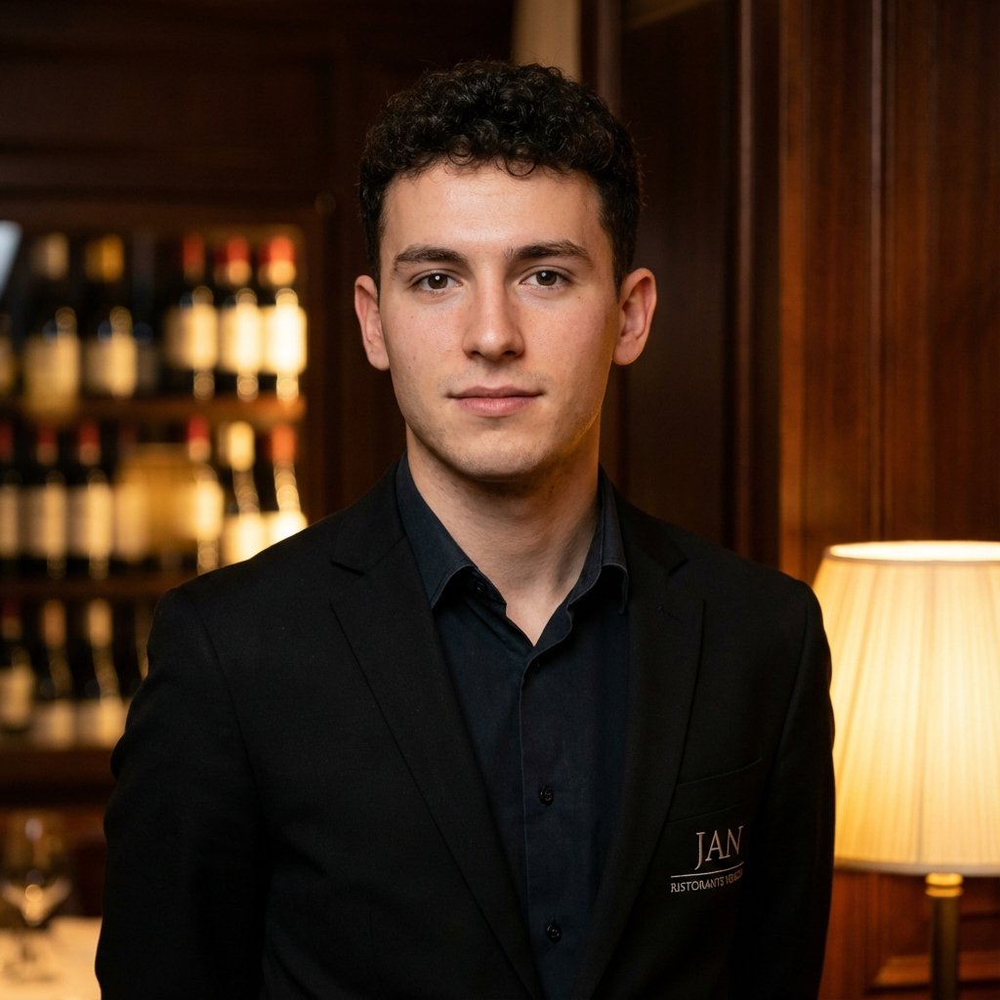
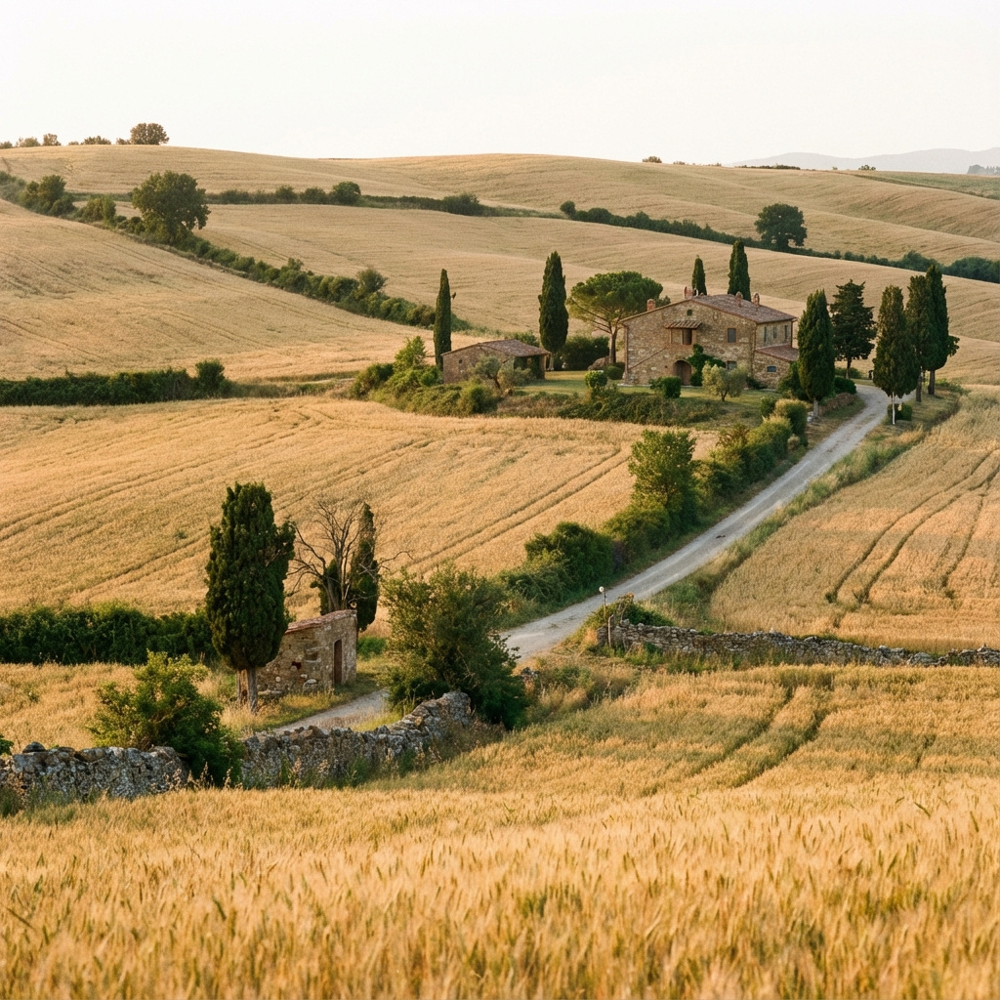
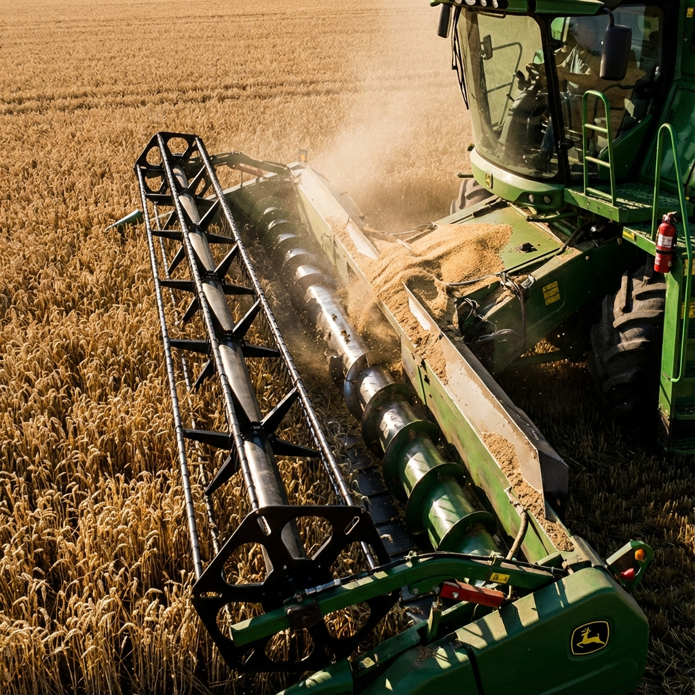
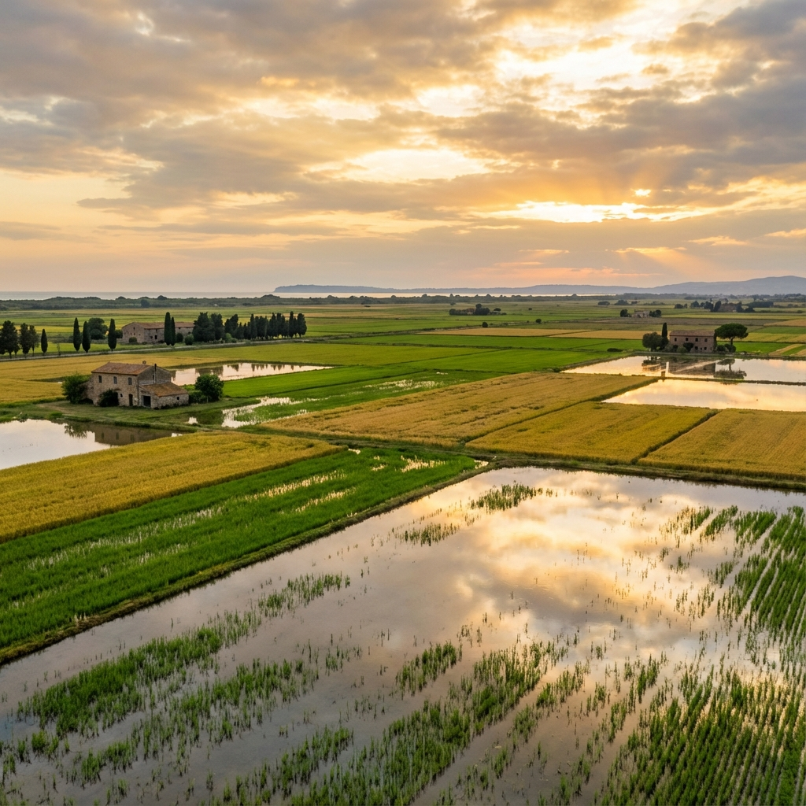

La Cucina di Mamma
Un ristorante italiano situato nel centro di Roma, dove ogni piatto racconta una storia e ogni profumo risveglia un ricordo.


La Storia di Antonieta
Antonieta è una donna italiana di 62 anni che ha sempre avuto una storia molto speciale. È nata in una famiglia che lavorava nel settore primario: i suoi genitori erano contadini e passavano la giornata curando la terra e le coltivazioni. È cresciuta circondata da campi, animali e il duro lavoro della campagna.
Fin da piccola, Antonieta ha scoperto di avere una grande passione per la cucina italiana. Le piaceva vedere come sua madre preparava piatti tradizionali con ingredienti freschi del campo. Sognava di poter cucinare per molte persone un giorno, ma pensava sempre che, per la sua classe sociale e il luogo da cui proveniva, quei sogni fossero troppo grandi e difficili da realizzare.
Ma questo non l'ha fermata. Dopo aver lavorato molto ha creato ''La Cucina di Mamma'', un ristorante con cibo tradizionale italiano che le ricorda sua madre. Oggi il ristorante è molto popolare tra turisti e italiani. Un paio di anni fa Antonieta è andata in pensione e ha ceduto l'incarico a quattro giovani dipendenti provenienti dalla Spagna, con l'illusione di seguire il sogno di Antonieta.

Perché il nostro logo?
Ogni elemento del nostro logo spiega una parte della nostra storia

Il Ramo di Ulivo
Simbolo millenario della cultura mediterranea. Rappresenta la pace, la prosperità e la connessione con la terra.
Il Cerchio
Simboleggia l'unità familiare. Ogni cliente fa parte della nostra famiglia.
Tipografia Elegante
Riflette il carattere gourmet. Sofisticatezza e calore di casa in ogni lettera.
Colori Sobri
Crema su nero: eleganza senza tempo e lusso discreto.
Il nostro team

Noa
CAMERIERASi distingue per la sua gentilezza e per l'ottima attenzione al pubblico.

Micaela
CAMERIERAInsieme a Noa, garantisce che ogni cliente abbia un'esperienza eccezionale.

Aissa
CASSIERESi occupa della gestione e di un buon incasso con efficacia; la sua partecipazione è fondamentale.

Jan
CHEFElabora squisiti piatti gourmet che risvegliano le papille gustative. Un'esplosione di sapori grazie alla sua passione.

Origine degli Alimenti
Nella nostra cucina utilizziamo alimenti di origine naturale, cioè ingredienti che raccogliamo direttamente. Abbiamo una fattoria agricola in Toscana. Si tratta di una tenuta biologica attiva dove coltiviamo grano, semi di girasole, farro e ceci, tra le altre colture.
Nella pianura della Maremma coltiviamo riso, in particolare varietà come Carnaroli o Arborio, sfruttando i suoli più pianeggianti e l'acqua disponibile per la semina.
Metodi Agricoli e Filosofia
Il Grano

Si coltiva preparando prima la terra con trattori e aratri moderni. Si semina con seminatrici uniformi.
- Seminatrici uniformi
- Irrigazione automatica e controllo dei parassiti
- Raccolto con "mietitrebbie" (tagliano, trebbiano e separano)
Il Riso

Richiede campi allagati, livellati con attrezzature speciali. Varietà: Carnaroli, Arborio.
- Campi allagati e livellati
- Raccolto drenando l'acqua
- Separazione meccanica del chicco
Filosofia Sostenibile
Nel nostro ristorante italiano crediamo che la buona cucina inizi dalla terra. Piccoli appezzamenti ( <1 ha) delimitati da elementi naturali. Priorizziamo l'agricoltura biologica: senza pesticidi artificiali né OGM. Concimi organici e rispetto per la biodiversità e i ritmi naturali.
Cosa dicono i nostri clienti
"La migliore esperienza gastronomica italiana fuori dall'Italia. I piatti di Antonieta sono autentici e pieni di sapore. Totalmente raccomandato!"
"Il personale è incantevole e l'atmosfera ti trasporta direttamente a Roma. Gli ingredienti freschi della loro stessa fattoria fanno la differenza."
"Un gioiello nascosto nel centro di Roma. La passione per la cucina tradizionale si nota in ogni piatto. Torneremo di sicuro!"
I Nostri Numeri
Domande Frequenti
❓ Accettate prenotazioni?
+Sì! Puoi prenotare il tuo tavolo tramite il nostro sistema online o chiamandoci direttamente. Consigliamo di prenotare in anticipo, specialmente nei fine settimana.
🥗 Avete opzioni vegetariane/vegane?
+Certamente! Il nostro menù include diverse opzioni vegetariane e vegane, sempre preparate con gli stessi ingredienti freschi di qualità. Chiedi al nostro team per consigli.
🅿️ C'è parcheggio disponibile?
+Abbiamo una convenzione con il parcheggio "Garage Condotti" a soli 50 metri dal ristorante. I nostri clienti ottengono uno sconto del 30% presentando lo scontrino del ristorante.
💳 Quali metodi di pagamento accettate?
+Accettiamo contanti, carte di credito/debito (Visa, Mastercard, American Express) e pagamenti digitali come Apple Pay e Google Pay.
👶 È un ristorante per famiglie?
+Assolutamente! Siamo un ristorante familiare e amiamo accogliere famiglie con bambini. Disponiamo di seggioloni, un menù speciale per bambini e fasciatoi nei bagni.
Chi Siamo
La Chef Antonieta
Nata a Roma nel 1940, Antonieta ha imparato le ricette tradizionali da sua nonna. Nel 1962, a soli 22 anni, ha aperto La Cucina di Mamma con il sogno di condividere l'autentica cucina italiana con il mondo.
Storia del Ristorante
Dal 1962, siamo stati un pilastro della gastronomia romana. Tre generazioni della famiglia hanno continuato la tradizione, mantenendo le ricette originali mentre abbracciamo ingredienti di stagione.
Filosofia Culinaria
"Mangiare non è solo nutrirsi, è creare ricordi." Crediamo nella cucina onesta, con ingredienti locali e di qualità. Ogni piatto è un abbraccio della Mamma.
Origine degli Ingredienti
I nostri ingredienti vengono direttamente da fattorie locali della Toscana, Sicilia e Lazio. Pasta artigianale, pomodori coltivati al sole, olio d'oliva extra vergine DOP.
Perché lo facciamo
Perché ogni sorriso di un cliente ci ricorda perché abbiamo iniziato. Perché la cucina italiana è amore diventato realtà. Perché siamo, e saremo sempre, La Cucina di Mamma.
Premi e Riconoscimenti
Miglior Ristorante Italiano
2023
Guida Gastronomica di Roma
3 Stelle Michelin
2020-2024
Guida Michelin
Certificato di Eccellenza
2015-2024
TripAdvisor
Certificato di Qualità
2024
Associazione Ristoratori
Cucina Sostenibile
2022
Green Restaurant Association
Preferito dai Clienti
2010-2024
4.9/5 ★ (2,847 reviews)
Come Arrivare
📍 Indirizzo
Via dei Condotti, 47
00187 Roma,
Italia
🚇 Trasporto Pubblico
Metro: Linea A -
Stazione Spagna (5 min a piedi)
Bus: 117, 119, 590
🅿️ Parcheggio
Garage Condotti -
50m (30% sconto)
Villa Borghese -
800m a piedi
🚶 Vicino a...
🏛️ Fontana di Trevi - 3 min
🛍️ Via del Corso - 2 min
🎨 Piazza di Spagna - 5 min